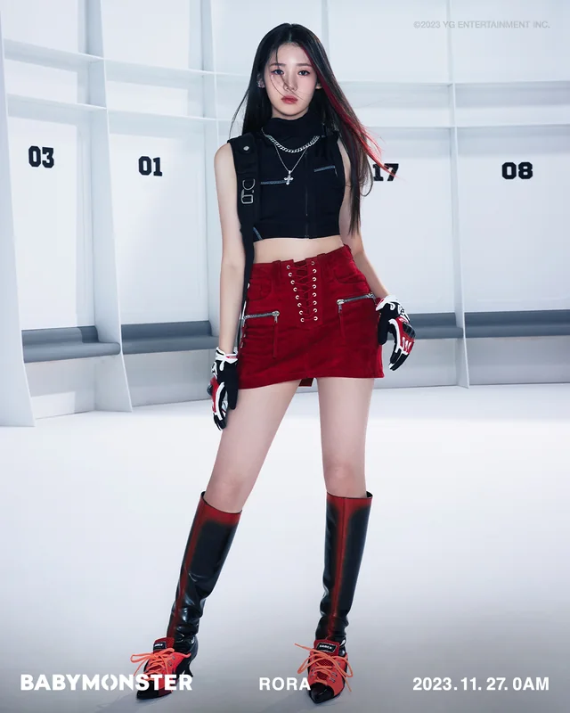

YG Entertainment, é uma empresa de entretenimento sul-coreana fundada em 1996 por Yang Hyun-suk com sede em Seul. A empresa atua como uma gravadora, agência de talentos, marca de roupas, marca de cosméticos, empresa de gestão de eventos e produção de concertos e por fim como produtora e editora musical.
Membros
BabyMonster, também conhecido como Baemon, é um girl group sul-coreano formado pela YG Entertainment. Composto por seis integrantes: Ruka, Pharita, Asa, Rami, Rora e Chiquita, o grupo estreou em 27 de novembro de 2023, com o lançamento de seu single digital, "Batter Up".
ang revelou que o número de membros que ele planejou inicialmente era cinco; no entanto, um conjunto de sete peças foi finalizado com três sul-coreanos (Ahyeon, Rami, Rora), dois japoneses (Ruka, Asa) e dois membros tailandeses (Pharita, Chiquita).
Rami
Em 12 de janeiro, Haram foi oficialmente apresentado através de uma apresentação ao vivo como o primeiro membro do BABYMONSTER. Através de suas fotos de estreia, foi revelado que ela mudou seu nome artístico para Rami. Eles fizeram sua estreia em 27 de novembro de 2023 com o single digital "Batter Up"
Em 30 de dezembro de 2022, a YG Entertainment revelou um teaser pôster anunciando seus planos de estrear um novo grupo feminino. No dia 1º de janeiro de 2023, por meio de um vídeo no YouTube intitulado "YG NEXT MOVEMENT", o nome do grupo foi confirmado como BABYMONSTER. No mesmo vídeo, Rami (então conhecida como Haram) pode ser vista praticando, aparentemente confirmando seu status como membro do grupo.
Pharita
Em 30 de dezembro de 2022, a YG Entertainment revelou um teaser pôster anunciando seus planos de estrear um novo grupo feminino. Em 1º de janeiro de 2023, o nome do grupo foi confirmado como BABYMONSTER. No mesmo vídeo, Pharita pode ser vista praticando, aparentemente confirmando seu status como integrante do grupo.
Em 2 de fevereiro, Pharita foi apresentada através de uma apresentação ao vivo como o sexto membro do BABYMONSTER. Eles fizeram sua estreia em 27 de novembro de 2023 com o single digital "Batter Up".
Chiquita
Em 30 de dezembro de 2022, a YG Entertainment revelou um teaser pôster anunciando seus planos de estrear um novo grupo feminino. Em 1º de janeiro de 2023, o nome do grupo foi confirmado como BABYMONSTER. Mais tarde naquele dia, o irmão mais velho de Chiquita, o concorrente do 789 SURVIVAL Copper, revelou que ela era membro do BABYMONSTER.
Em 23 de janeiro, Chiquita foi apresentada através de uma performance ao vivo como a terceira integrante do BABYMONSTER. Eles fizeram sua estreia em 27 de novembro de 2023 com o single digital "Batter Up".
Ruka
Em 30 de dezembro de 2022, a YG Entertainment revelou um teaser pôster anunciando seus planos de estrear um novo grupo feminino. Em 1º de janeiro de 2023, o nome do grupo foi confirmado como BABYMONSTER. No mesmo vídeo, Ruka pode ser vista praticando, aparentemente confirmando seu status como integrante do grupo.
Em 6 de fevereiro, Ruka foi apresentada através de uma apresentação ao vivo como o sétimo e último membro do BABYMONSTER. Eles fizeram sua estreia em 27 de novembro de 2023 com o single digital "Batter Up".
Asa
Em 30 de dezembro de 2022, a YG Entertainment revelou um teaser pôster anunciando seus planos de estrear um novo grupo feminino. Em 1º de janeiro de 2023, o nome do grupo foi confirmado como BABYMONSTER. No mesmo vídeo, Asa pode ser vista praticando, aparentemente confirmando seu status como membro do grupo.
Em 26 de janeiro, Asa foi apresentada através de uma apresentação ao vivo como o quarto membro do BABYMONSTER. Eles fizeram sua estreia em 27 de novembro de 2023 com o single digital "Batter Up".
Rora

Em 30 de dezembro de 2022, a YG Entertainment revelou um teaser pôster anunciando seus planos de estrear um novo grupo feminino. No dia 1º de janeiro de 2023, por meio de um vídeo no YouTube intitulado "YG NEXT MOVEMENT", o nome do grupo foi confirmado como BABYMONSTER. No mesmo vídeo, Rora pode ser vista praticando, aparentemente confirmando seu status como integrante do grupo.
Em 30 de janeiro, Rora foi apresentada através de uma apresentação ao vivo como o quinto membro do BABYMONSTER. Eles fizeram sua estreia em 27 de novembro de 2023 com o single digital "Batter Up".